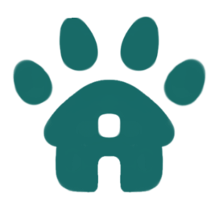

Our Services
Here are some of the services on this website
Adopt your Pet!
Each animal will have a special profile that contains detailed information about the animal and allows users to initiate the adoption process by filling out an adoption application form.
Article
This education section provides articles about animal care, adoption tips, food, and other information related to animals.
Event
A feature that showcases information about animal-related events, such as adoption campaigns, pet exhibitions, and community meetups, to raise awareness and foster interaction within the animal adoption community.

Find your Pet!
Users can upload/post information about their missing pets, including the pet's characteristics (color, breed, last known location).
Life After Adoption
Users can create posts sharing the life journey of their pets after adoption.
What's Petify?
Petify is a website established by Dodoidoy Company in 2024, with the aim of becoming a comprehensive source of information about pets. We believe that every animal deserves proper care and a loving home. Petify not only provides information on how to care for pets but also serves as a shelter for abandoned animals. Our main mission is to give a second chance to animals in need by providing them with a safe and comfortable new home. Through our platform, we hope to raise public awareness about the importance of pet care, as well as create a supportive community where people can share their experiences in caring for animals. With the support of our users, we are committed to helping more animals find loving families and enrich their lives.
Our Shelter Partner
Here are the partners who support and assists us
House of Pet
House of Pet is a shelter located in the Java island with various branches spread across the island of Java.
: @HouseOfPet
: HOP@gmail.com
Animal Shelter
Animal Shelter is a shelter located on the island of Borneo with various branches spread around Pontianak, Balikpapan, Samarinda, and the surrounding areas
: @AnimalShelter
: AnimalShelter@gmail.com

Garda Rescue
Garda Rescue is a shelter located on the island of Sulawesi with various branches spread around Makasar, Bitung, Manado and the surrounding areas
: @GardaRescue
: GardaRescue@gmail.com
Feedback
Response from previous users

Alfheim Elves
Petify ini merupakan website yang sangat membantu ya, ternyata. Saya jadi bisa mengetahui lebih banyak lagi mengenai hewan peliharaan saya. Saya juga jadi bisa menolong hewan peliharaan yang terlantar untuk mendapatkan tempat tinggal.
Gajah 18
Website yang sangat luar biasa. Saya merasa puas dengan informasi dan bantuan yang diberikan. Sangat direkomendasikan untuk semua pecinta hewan.
PPTI 18
Sangat membantu untuk menemukan tempat penampungan terbaik bagi hewan peliharaan saya. Timnya sangat ramah dan responsif.

